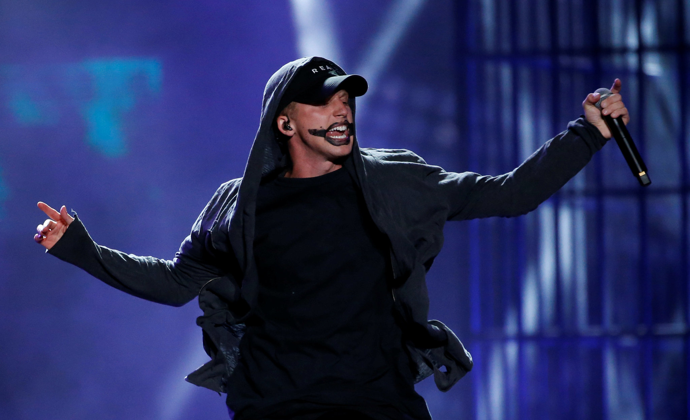

Nathan John Feuerstein (born March 30, 1991), known by his initials NF (stylized as ИF), is an American rapper, singer, songwriter, and record producer. He has released two EPs, I'm Free (2012), and a self-titled EP in 2014 with Capitol CMG. His first major-label album, Mansion, was released on March 31, 2015. His second studio album, Therapy Session, was released on April 22, 2016, and peaked at number 12 on the US Billboard 200. His albums have earned several accolades, some of which include: the Gospel Music Association Dove Award for Rap/Hip Hop Album of the Year (Therapy Session). NF achieved mainstream popularity in 2017 with Perception; the album charted at number one in the United States and was certified platinum, while its third single, "Let You Down", reached number twelve on the U.S. Billboard Hot 100, and was a top-ten hit internationally. He achieved similar commercial success with his follow up The Search (2019).
Feuerstein has credited Eminem as his prime influence in hip hop, claiming that at one point that was all he listened to. NF's style has also been compared to Logic and Machine Gun Kelly. Although he found his musical upbringing in Christian hip-hop, Feuerstein has denied his label as a Christian rapper, saying "I'm a Christian, but I don't make Christian music. You're not going to reach everyone with just one point of view. I write about things I'm actually dealing with. You don't have to be Christian to relate to them." In 2013, Feuerstein appeared on Christian hip-hop artist Flame's album Royal Flush on the track "Start Over". In 2015, his features on TobyMac's This Is Not a Test track "Til the Day I Die" and Marty's Marty For President track "The One With My Friends" gained him fame and recognition in the Christian hip-hop genre. Feuerstein's 2017 collaboration with Futuristic, "Epiphany", enhanced his career in the secular rap industry.
Therapy Session Tour (2017)
Perception Tour (2018)
Perception World Tour (2018)
The Search Tour (2019)
Clouds Tour (2021)
Feuerstein began dating Bridgette Doremus in 2015. They married in September 2018 after 3 years of dating. They have one child, a son, who was born in 2021.